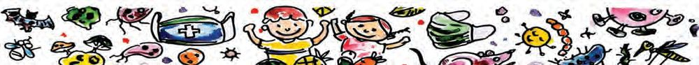
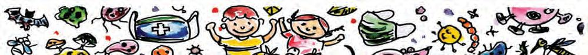
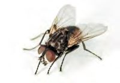
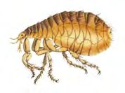
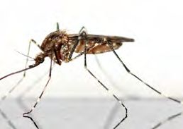
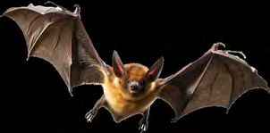

It is a viral fever.
Anyone else at home
caught with fever?
Yes, His sister and
I were affected.
Illustration 2.1
Did you read the conversation? What could be the reason for fever?
What should be done to prevent the spreading of the disease to others?
Write the names of diseases you know in your science diary.
Are they all communicable?
Complete the table by adding more diseases.
Communicable diseases
Communicable diseases are those which spread
from one person to others.
Pandemics
When communicable diseases spread to other countries or
continents, and affect a large number of people, it is called
a pandemic. Smallpox, tuberculosis, plague, Covid-19 etc.
are some of the pandemics that we have survived.
Aren’t we more likely to get affected when we come into contact
with someone who is sick?
What cause communicable diseases?
Can we see them?
Pathogens
Most communicable diseases are caused by microorganisms like
bacteria, viruses, and fungi that cannot be seen with the naked eyes.
They are called pathogens because they cause diseases.
Microscopic view of Bacteria
Microscopic view of Virus
Figure 2.1
Living with the microorganisms
Not all microorganisms are pathogens. There are many beneficial
bacteria in our body. They help in the digestion and absorption of
our food.
There are many instances where microorganisms can be useful to us.
Dosa batter is fermented by certain bacteria. Bacteria and fungi break
down organic matter and add it to the soil. Find more instances where
microorganisms are beneficial and write them in your science diary.
The world of fungi
We are familiar with bread mold and
black mold found on clothes. They are
all fungi. Candida, Cryptococcus, and
Histoplasma are some of the fungi that
cause disease to humans. The world of
fungi includes everything from edible
mushrooms to those that cannot be
seen with the naked eyes.
Figure 2.2
How diseases spread
Observe the illustration and find out the situations in which diseases
spread.
Illustration 2.2
●
Why do we cover our nose and mouth with a handkerchief when
we cough or sneeze?
Why do we keep food items covered?
Basic Science V
29
Page 30

Figure fig_ch01_p030_01 (Page 30)

Figure fig_ch01_p030_02 (Page 30)

Figure fig_ch01_p030_03 (Page 30)

Figure fig_ch01_p030_04 (Page 30)

Figure fig_ch01_p030_05 (Page 30)

Figure fig_ch01_p030_06 (Page 30)
In what ways do disease causing microorganisms enter the human
body?
Discuss and complete the idea chart.
How microorganisms enter the
body and the diseases they cause
Not through vectors
Now you know that diseases spread through various ways.
How many disease-carrying organisms were you able to identify?
Vectors
Vectors are organisms that bring disease-carrying
microorganisms into our body. Housefly, rat flea, mosquito,
bats, etc. are some of the vector organisms.
When the surroundings become polluted
Observe the illustration 2.4.
Do similar conditions exist in your surroundings?
Illustration 2.4
Write down the conditions in which vectors multiply.
Vectors
Conditions in which they multiply
Housefly
Mosquito
Mosquitoes breed in discarded plastic bags, bottles,
coconut shells and stagnant water.
Rat
Table 2.2
What can we do to control vectors?
Discuss in the class and write down in the science diary.
Let us control mosquitoes
We can prevent many diseases by controlling mosquitoes. Is it enough
to eliminate mosquito breeding conditions only in our home?
We can’t survive
here. We have to look
for other places to
lay eggs.
This locality is
clean. We cannot
live here.
Illustration 2.5
Avoiding water logging, removing grass and weeds around residences,
and cleaning drains are a few ways to prevent mosquito breeding.
Observe the illustration.
Illustration 2.6
What are the precautions to avoid mosquito bites?
Keep doors and windows closed in the evening.
●
Will the hygiene of our surroundings be enough to prevent the
spread of disease?
Let us see some other things to keep in mind.
Diseases
Things to keep in mind to prevent diseases
Use fruits and vegetables after washing.
Diseases that spread
Keep food items covered.
through food and water
Drink boiled water.
Avoid contact with the sick person.
Don’t use the sick person’s handkerchief,
Diseases that spread clothes, etc.
through air and contact
Use mask.
Maintain personal hygiene.
Use footwear.
Diseases that spread Prevent wounds in the body from getting
through soil and sewage into contact with sewage.
Wash hands and legs with soap if get dirty.
Table 2.3
What can you do to ensure that your home, school, and washrooms
are clean to prevent disease?
Communicable diseases in animals and plants
ST-345-3-BASIC SCI. (E)-5-Vol-1
Do communicable diseases affect only humans?
See the newspaper reports.
Have you observed the plants that have communicable diseases?
See the pictures
Brown leaf spot disease in rice Mosaic disease in pea plants
Bud rot of coconut
Figure 2.4
Enquire about other diseases that affect plants and organisms. Write
them in the science diary.
Hygiene habits
Isn’t personal hygiene as important as environmental hygiene for a
healthy life? Look at some habits.
Illustration 2.8
Which of these are good health habits? Tick them.
Wash hands only after meals.
Brush teeth every night after meals.
Do not trim the nails of feet and hands.
Use footwear when walking outside.
Eat fruits that are gnawed by birds.
Do not consume snacks and drinks kept open.
Spit in public places.
Bathe daily.
Prepare and display posters related to personal hygiene and
environmental hygiene.
Immunity
Our bodies naturally have the ability to control and fight pathogens
once they enter the body. This is called natural immunity. This ability
varies from person to person.
The body is unable to develop natural immunity against some
communicable diseases such as polio and hepatitis-B. We need to take
vaccinations to avoid such diseases. Through this, it will be possible
to gain immunity. This is called acquired immunity. It is through
vaccines that we have survived many epidemics, such as smallpox,
plague and polio, which have threatened the very existence of the
human race.
Those who want to
be vaccinated should
come to counter 2
Illustration 2.9
Which diseases should be vaccinated against?
Which are the mandatory vaccines to be taken by the age of 16?
Discuss in class. Collect more information from interviews with health
workers. Do you need to prepare a questionnaire to interview the
healthcare professionals? Which questions can be included?
Proper awareness is to be given to the people regarding the mode of
transmission of diseases and the methods of prevention. What can
we do for this?
● Drama
● Puppetry
● Cartoon
● Poster
●
●
Diseases can be kept away with proper awareness and
preventive measures. Healthy people are the wealth of a
nation.
Basic Science V
Write down five decisions you have taken to maintain personal
hygiene.
Personal and social hygiene are important in preventing
communicable diseases. Do you agree with this statement?
Please elaborate.
Do you agree with the following precautions that we should
take to control vector-borne diseases?
o Eliminate conditions that cause sewage accumulation.
o Disposal of garbage in public places.
o If water retention is unavoidable, breed fish such as Guppy
and Gambusia in it.
o Food items need not be kept covered.
o Use food items only after washing.
o Drink boiled water.
o Keep the house and surroundings clean.
o Practise proper waste disposal at source.
Extended activities
1. Prepare and present a play to educate the public about the
circumstances in which communicable diseases spread and
the precautions we need to take against them.
2. Prepare a ‘Waste Map’ of the school premises. Prepare guidelines
for making the school environment litter-free on the basis of
the information on the map.